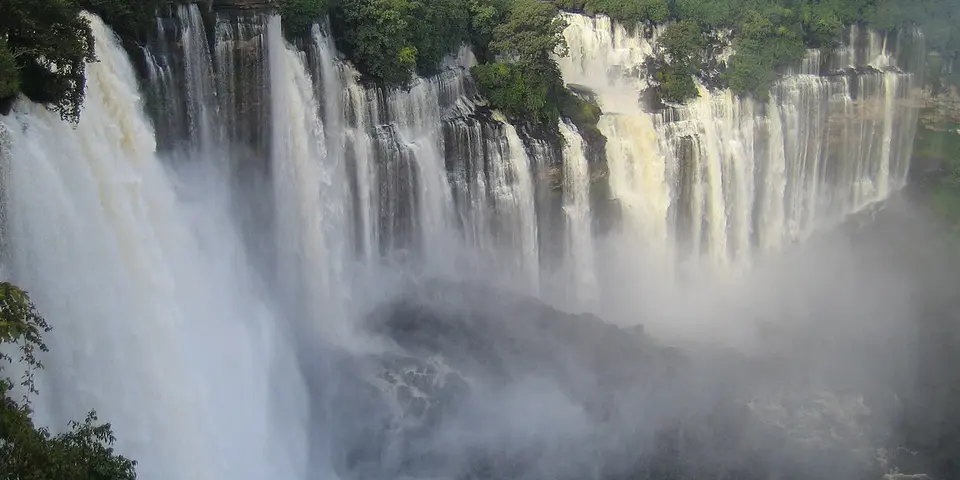

Sub-Saharan Africa
Angola on a budget
Angola is one of Africa's least-touristed countries, with the huge Kalandula Falls, the Tundavala cliffs near Lubango, the Serra da Leba road and a wild desert coast.
Photo: Paulo César Santos, CC0, via Wikimedia Commons

Classic route
Luanda, Kalandula Falls and the south around Lubango. 2 weeks.
Before you go
Flights to Kalandula Falls: Skyscanner · Kiwi.com · Google Flights
Hostels and guesthouses in Kalandula Falls · Lubango · Tundavala Gap · Luanda
Tours and tickets: Kalandula Falls · Lubango
Mobile data: Angola eSIM
Travel insurance: SafetyWing
How much 11 places in Angola cost
Daily budgets per person in US dollars: a hostel dorm or simple guesthouse, local food, local transport and the usual entry fees.
-
Kalandula Falls
One of Africa's largest waterfalls by volume, a wide horseshoe of thundering water dropping into a rainforest gorge.
Bed $25 · Food $10 · Getting around $10 · Extras $3
Budget tip: Visit after the rains, from April to June, when the flow is strongest. A night in nearby Malanje keeps costs down.
$48per day -
Lubango
A cool highland city watched over by a Christ statue on the hill, and the base for dramatic escarpment viewpoints.
Bed $25 · Food $10 · Getting around $5 · Extras $3
Budget tip: Shared taxis are cheap. Use it as the base for Tundavala and the Serra da Leba pass.
$43per day -
Tundavala Gap
Stand at the edge of a 1,000 m drop from the escarpment, close to the hairpin bends of the Serra da Leba pass.
Bed $25 · Food $10 · Getting around $8 · Extras $3
Budget tip: Go early for the clearest views. Hire a car with a driver from Lubango and share it with others.
$46per day -
Luanda
A busy capital with a palm-lined seafront promenade, the Ilha beach strip and a sobering slavery museum.
Bed $40 · Food $15 · Getting around $6 · Extras $4
Budget tip: Luanda is expensive. Eat at local restaurants and avoid the Ilha's tourist places.
$65per day -
Benguela
Laid-back colonial coastal city with pastel buildings, the red sandstone cliffs of Baía Azul nearby and fresh grilled fish along the waterfront.
Bed $25 · Food $10 · Getting around $4 · Extras $3
Budget tip: Take the restored Benguela Railway train from Lobito for a cheap scenic ride, and eat at local quintais where grilled fish costs far less than restaurants.
$42per day -
Baía Azul
Sheltered turquoise bay framed by red cliffs south of Benguela, with calm water for swimming and quiet weekday sands.
Bed $25 · Food $10 · Getting around $5 · Extras $3
Budget tip: Go on a weekday to avoid crowds, catch a candongueiro minibus or shared taxi from Benguela, and bring your own food and water.
$43per day -
Cabo Ledo
A surf beach south of Luanda with long left-hand waves, near the eroded cliffs of the Miradouro da Lua.
Bed $25 · Food $10 · Getting around $8 · Extras $5
Budget tip: Go with a local driver and bring food; there is little on site.
$48per day -
Pedras Negras de Pungo Andongo
Giant black rock formations rising from the savannah of Malanje province, tied to legends of Queen Njinga and carrying supposed footprints in the stone.
Bed $25 · Food $10 · Getting around $10 · Extras $3
Budget tip: Pair it with Kalandula Falls on the same trip from Malanje, sharing a hired car, and carry water since there are few shops nearby.
$48per day -
Namibe Desert
A stark desert coast with ancient welwitschia plants and the Arco lagoon, framed by eroded rock arches.
Bed $25 · Food $10 · Getting around $10 · Extras $5
Budget tip: Hire a driver with a 4x4. Bring all your water, as there is none along the way.
$50per day -
Miradouro da Lua
Eroded clay cliffs south of Luanda carved into lunar spires of red, ochre and white, dropping toward the Atlantic Ocean.
Bed $30 · Food $12 · Getting around $6 · Extras $2
Budget tip: Stop on the way to Cabo Ledo or Kissama to save on transport, and visit late afternoon when the low sun lights the cliffs best.
$50per day -
Kissama National Park
Savannah and baobab park south of Luanda along the Kwanza River, with restocked elephants, giraffes and forest buffalo plus sea turtles on the coast.
Bed $30 · Food $12 · Getting around $15 · Extras $15
Budget tip: Go as a day trip from Luanda with a local operator splitting a 4x4, and leave early to beat the heat and the city traffic.
$72per day
Know before you go
Angola on a budget: the basics
Currency
$1 = 922 AOA
Angolan kwanza
| Dollars to AOA | AOA to dollars | ||
|---|---|---|---|
| $1 | 922 AOA | 100 AOA | $0.108 |
| $5 | 4,611 AOA | 500 AOA | $0.542 |
| $10 | 9,223 AOA | 1,000 AOA | $1.08 |
| $20 | 18,445 AOA | 5,000 AOA | $5.42 |
| $50 | 46,113 AOA | 10,000 AOA | $10.84 |
| $100 | 92,226 AOA | 50,000 AOA | $54.21 |
A typical day here (about $48) is roughly 44,000 AOA.
Mid-market rate on 2026-10-05. Cash machines and exchange desks pay a little less.
Getting around
In Luanda, ride-hailing apps such as Yango are easier than the crowded blue-and-white candongueiro minibuses. Intercity buses run on the main roads to Malanje (for Kalandula Falls) and Lubango, and domestic flights save long days on the road. Book buses a day ahead at the company office.
Where to sleep
Budget beds are scarce in Luanda, where simple guesthouses or apartments are the best value. Outside the capital, small hotels and pensions are cheaper and rarely need booking.
What to eat
- Muamba de galinha: chicken in palm oil sauce with okra
- Funge: stiff cassava porridge, the everyday staple
- Calulu: dried fish stewed with vegetables and palm oil
- Cuca: the national lager
Money
Angola is pricey and largely cash-based, and foreign cards work only at some ATMs and hotels, so bring backup. Haggle at markets; tips are welcome but not expected at street stalls.
Phone data
Unitel and Africell SIMs need a passport to register, and coverage is good in cities but thin in the countryside.
Heads up
Portuguese is the main language, and English is rare outside hotels, so a translation app helps a lot.
Angola travel: quick answers
How much does a day in Angola cost on a budget?
About $48 a day for one person, from $42 in Benguela to $72 in Kissama National Park. That covers a hostel dorm or simple guesthouse, local food, local transport and the usual entry fees, so a week runs about $336 before flights.
When is the best time to visit Angola?
May to September is the best time, with the most reliable weather for getting around.
What is the cheapest place to visit in Angola?
Benguela, at about $42 a day. Laid-back colonial coastal city with pastel buildings, the red sandstone cliffs of Baía Azul nearby and fresh grilled fish along the waterfront.
How long do you need in Angola?
Luanda, Kalandula Falls and the south around Lubango. 2 weeks.
How much is $1 in Angola?
One US dollar is about 922 Angolan kwanza (AOA), going by the mid-market rate on 2026-10-05. So $20 is roughly 18,445 AOA, and a typical budget day of $48 comes to about 44,000 AOA.
How do you get around Angola cheaply?
In Luanda, ride-hailing apps such as Yango are easier than the crowded blue-and-white candongueiro minibuses. Intercity buses run on the main roads to Malanje (for Kalandula Falls) and Lubango, and domestic flights save long days on the road. Book buses a day ahead at the company office.
What food should you try in Angola?
Muamba de galinha, chicken in palm oil sauce with okra. Funge, stiff cassava porridge, the everyday staple. Calulu, dried fish stewed with vegetables and palm oil. Cuca, the national lager.
Planning around the seasons? See where to go in May, or compare the cheapest countries nearby.
Similar budgets nearby
- Mauritius $50/day
- Cape Verde $45/day
- South Africa $52/day
- Eritrea $43/day